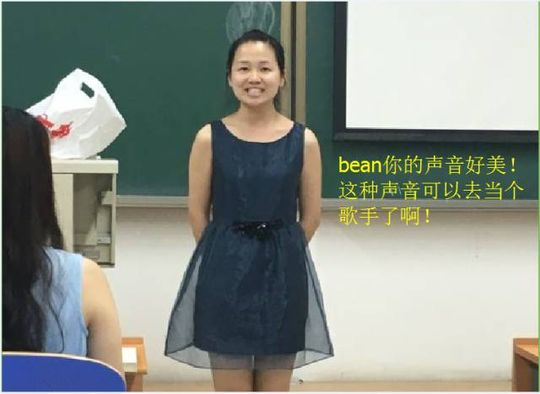
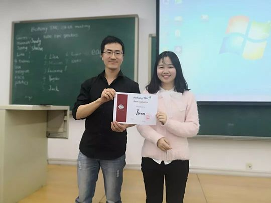
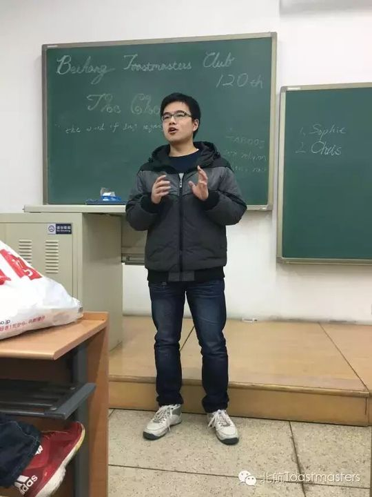
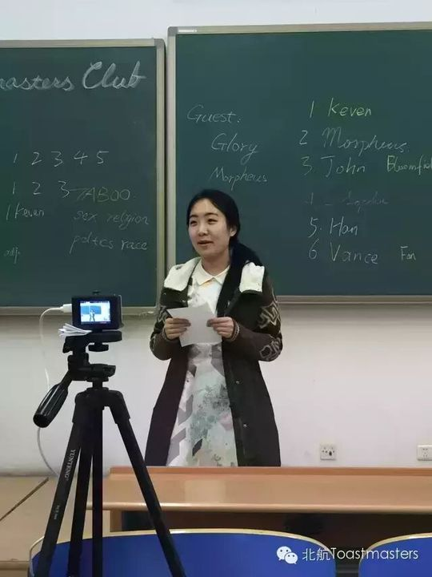
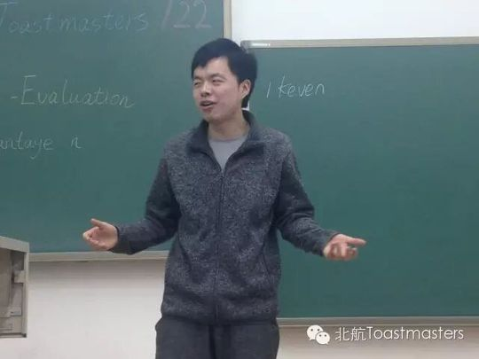
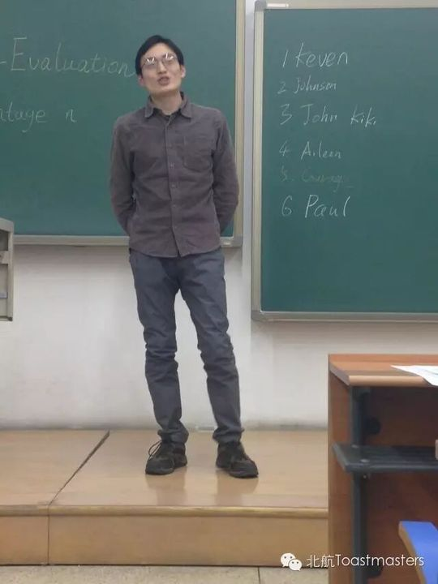
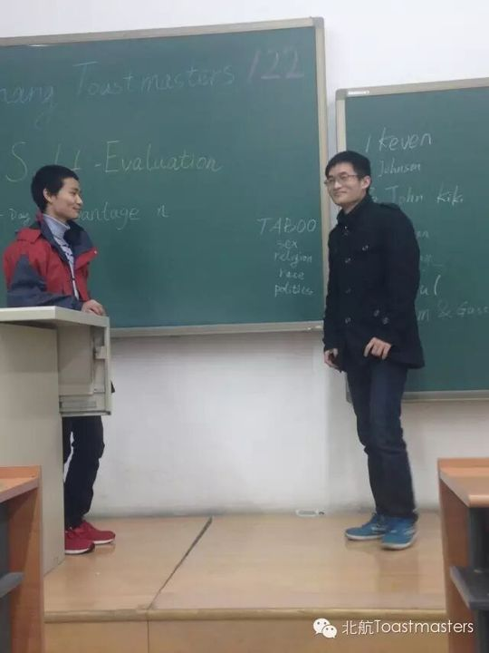
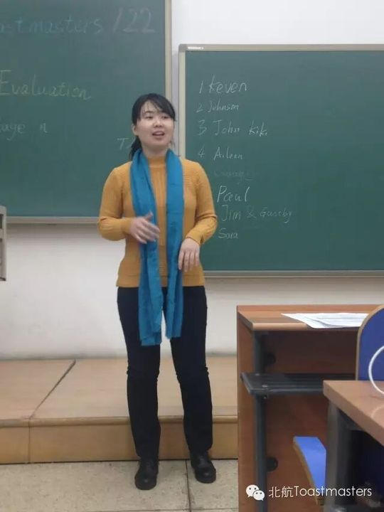
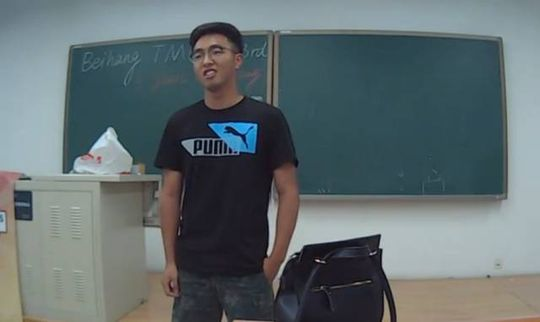

Bean
余小豆，英文名 Bean，来自贵州贵阳，就读于北京林业大学人力资源管理专业。她自称"慢热型"，长得安静却坐不住，最大的爱好是耍、摆龙门阵和被人拍照。她还有一身唱歌的童子功——3岁登台，9岁从跳舞改行唱歌，一路练到高三，曾拿过四川省大学生校园歌手大赛第二名，也曾在中山音乐堂的红楼梦专场里随晓民乐团唱过《秋窗风雨夕》《叹香菱》。她笑说自己"说比唱得好是有可能性的"，那是会员们对她歌声最高的褒奖。
她在成都时就听说过头马，为锻炼自己、选了离学校最近的北航俱乐部，于2015年10月加入。对北航头马的第一印象是"热情、友善、真诚"。入会后她节奏稳健地推进备稿演讲：120次会议上完成 CC1《How to Estimate He Is Your Mr. Right》，122次以专业视角讲《Preserving and Developing: Chinese Dialects》（CC2），呼吁珍视方言这一多彩文化的宝藏；到138次会议（520那天）以 CC3《Wish List before Graduation》分享毕业前的清单——读博、结婚、生孩子，被纪要笑称"有品位"。
2016年6月俱乐部三周年趴上，她以一首歌惊艳全场，"声音就像那彩云之南边"，Vance 在送别时反复说她"就是美"，她也在那晚正式 farewell。但她和头马的缘分并未就此结束：毕业留京的她说"我在北京不离开，留着继续说"。一个月后的145次中文联合会议上，她第一次担任 Toastmaster 主持人——来头马三年里的头一遭，主持"机器人的未来"这一远超文科妹子知识范围的话题，完成了从演讲者到主持人的角色跨越，也为自己的头马旅程画上一个温暖而不舍的句点。
完整足迹 · 9 次出现（点开，每条可跳转原文）
- 2015-11-26第120次 · 预告备稿演讲How to Estimate He Is Your Mr. Right (CC1)
- 2015-12-01第120次 · 备稿演讲How to Estimate He is Your Mr.Right (CC1)
- 2015-12-10第122次 · 预告备稿演讲Chinese dialects (CC2)
- 2015-12-14第122次 · 备稿演讲Preserving and Developing: Chinese Dialects (CC2)
- 2016-05-20第138次 · 做CC3演讲《Wish List before Graduation》
- 2016-05-24第138次 · 做演讲《Wish list before graduation》
- 2016-06-27晚会献唱表演并告别毕业
- 2016-07-08来北航头马三年首次担任Toastmaster主持
- 2016-07-20接受会员风采采访分享个人经历
闯关之路 · Competent Communication
做过的演讲 · 3 场
担任过的会议角色
里程碑
- 2015-10 加入北航头马 ↗在成都时即听说头马，为锻炼自己选了离北林最近的北航俱乐部加入，第一印象是热情、友善、真诚。
- 2015-11-27 完成破冰演讲 CC1 ↗120次会议带来CC1《How to Estimate He Is Your Mr. Right》。
- 2016-06-24 三周年趴献唱并 farewell ↗在俱乐部三周年晚会上献唱，'声音就像那彩云之南'，并正式告别，但表示留京不离头马。
- 2016-07-08 首次担任 Toastmaster 主持 ↗145次中文联合会议主持'机器人的未来'，来头马三年第一次担任主持人。
为俱乐部做的事
- 以三个备稿演讲（CC1-CC3）持续为会议输出内容，话题涵盖爱情、方言文化与毕业愿望
- 在俱乐部三周年庆典上献唱，以专业级的歌声活跃晚会气氛
- 毕业告别后仍坚持留在头马，并主动挑战首次担任Toastmaster主持人，主持中文联合会议'机器人的未来'
照片墙 · 时间线
 ✓
✓ ✓
✓ ✓
✓
✓ ✓
✓
✓












